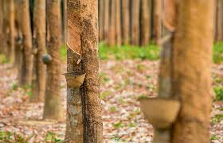

Non-Food Crops
A non-food crop is also known as an industrial crop and is grown to produce goods for manufacturing. They try to raise the farm sector’s income and promote economic growth in rural areas. Some important non-food crops are
Cotton
Cotton is the most important fiber crop and cotton seed is used as vegetable oil and part of fodder. Cotton is a Kharif crop and grows in tropical and subtropical areas. Cotton requires modest rainfall and in India, is one of the predominant rainfed crops. Cotton requires uniform high temperatures. Soil for cotton is the black soil of the Deccan and Malwa plateaus. The main cotton-producing states are Gujarat, Maharashtra, and Andhra Pradesh.

jute
Jute is an important natural fiber crop in India. Jute cultivation is mostly concentrated in eastern and northeastern India. The temperature required for its growth is between 25-35°C and rainfall is around 150-250 cm and the soil type is mostly well-drained alluvial soil.

tobacco
The tobacco plant has been an important part of magical and religious rituals by Native American peoples for many centuries before the arrival of the Europeans. Products made from the leaves were applied externally as poultices for boils or skin infections and sores, as well as for bruises and sprains. Teas made from tobacco leaves were used against intestinal worms, as a laxative, to induce vomiting (emetic), as an expectorant, for fainting and dizziness, as well as for headaches. Tobacco leaves are applied to cuts as an antiseptic and to stop bleeding. Ground tobacco leaves were also used as “snuff” (inhaled through the nose) for medicinal and ritualistic purposes. Tobacco smoked is sometimes blown into the ear to treat earaches.
Rubber
Rubber is a coherent elastic solid obtained from the latex of a number of tropical trees. It requires a humid and hot climate with a temperature of 25-35°C and annual rainfall of over 200 cm. Rubber production is mostly concentrated in the states of Kerala, Tamil Nadu, and Karnataka.